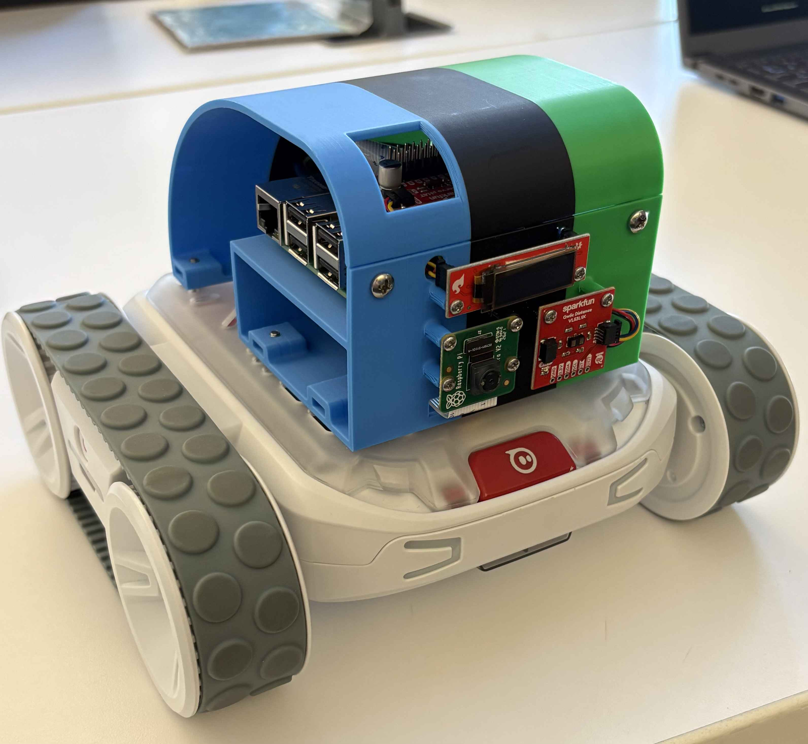

FRONT CAMERA ↗
Camera
The camera checks for bright flame colors and for haze near the top of the image.
T.O.E.S. stands for Thermal Operation Emergency Sentinel. We built it to look for smoke, flames, and floor hazards, then change what it does based on what it finds.

Jump to the part that interests you.
See the hazard. Make a safer move.
↘We wanted a robot that could do more than detect one thing. T.O.E.S. uses a camera, a front distance sensor, and a sensor facing the floor. It checks these inputs about ten times each second.
Each sensor notices something different. The camera looks for flames and haze. The front sensor measures distance and checks for smoke in the light path. The floor sensor looks for hazard markings.
A Raspberry Pi reads the sensors and tells the Sphero RVR base how to move and which lights to show.
The camera checks for bright flame colors and for haze near the top of the image.
It measures what is in front of the robot. Changes in the infrared signal can also point to smoke.
It looks for red boundary tape or a very dark surface. If it spots a floor hazard, T.O.E.S. backs away.
T.O.E.S. collects a camera image and sensor readings.
Our Python program checks the readings and chooses the most urgent response.
T.O.E.S. changes its movement and lights, updates the display, and saves an alert photo when an alarm first happens.
T.O.E.S. drives forward with green lights. If an obstacle is within 12 inches, it stops and turns.
CRUISE + AVOIDIf it detects smoke, T.O.E.S. turns amber, switches on its headlights, and slows down.
SLOW + ILLUMINATEIf the camera detects flames, T.O.E.S. stops and flashes red lights. It is set to stay at least 12 inches away.
STOP + ALERTA red line or very dark floor has the highest priority. T.O.E.S. backs up briefly and stops.
REVERSE + STOPPick a situation to see how we programmed T.O.E.S. to respond. This is an explanation of the robot, not a live feed.
Our code looks for bright red, orange, and yellow areas. It filters small spots and marks larger flame-like areas in the camera view.
The camera checks the upper part of the image for haze. The front sensor also looks for a weaker light return or unstable distance readings.
The floor sensor checks whether red dominates the surface color or whether the ground looks unusually dark.
Our code looks for bright flame colors and ignores very small areas. Lighting and reflections can still affect what the camera sees.
It gives us distance, signal strength, and range status. We compare those readings with a clean-air starting point to help spot smoke.
We have described how we programmed T.O.E.S., but we still need controlled testing to measure accuracy and false alarms.
Our project shows how a robot can use several sensors together. T.O.E.S. reads its surroundings, chooses a response, and makes that response visible through movement, lights, and its screen.